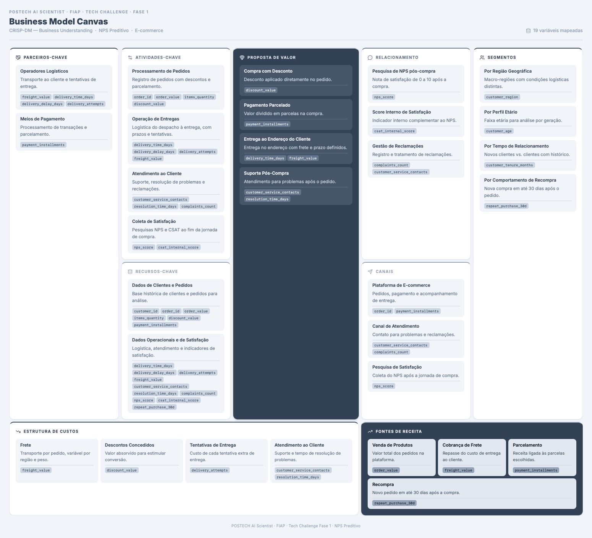

2. Business Canvas
CRISP-DM: Business Understanding

Contexto
O case descreve um e-commerce em crescimento acelerado que enfrenta alta variabilidade no Net Promoter Score (NPS) entre diferentes perfis de clientes. O indicador é coletado apenas ao final da jornada de compra, o que impede ações preventivas. A empresa dispõe de dados operacionais de pedidos, logística e atendimento — mas não de informações sobre catálogo, marketing ou concorrência.
Este canvas foi construído exclusivamente com base no que o case e as 19 variáveis do dataset permitem inferir. Elementos típicos de um e-commerce (fornecedores, estoque, campanhas, app mobile etc.) foram omitidos quando não há evidência nos dados disponíveis.
Visão geral do modelo
O canvas mapeia como a empresa gera valor na jornada de compra online: o cliente realiza um pedido com desconto e parcelamento, recebe a entrega no endereço e, quando necessário, aciona o suporte. Ao final, a empresa mede a satisfação via NPS e CSAT. Cada bloco do canvas está ancorado em variáveis observáveis no dataset, indicadas na imagem.
Blocos do canvas
Parceiros-chave
Inferidos a partir das variáveis logísticas e de pagamento:
- Operadores logísticos — responsáveis pelo transporte e pelas tentativas de entrega (
freight_value,delivery_time_days,delivery_delay_days,delivery_attempts). - Meios de pagamento — processam transações e habilitam o parcelamento (
payment_installments).
Não há dados sobre fornecedores de produtos, gateways específicos ou transportadoras individuais.
Atividades-chave
As operações centrais visíveis no dataset:
- Processamento de pedidos — registro de valor, quantidade de itens, descontos e forma de pagamento (
order_id,order_value,items_quantity,discount_value). - Operação de entregas — despacho, prazo, atrasos e tentativas de entrega (
delivery_time_days,delivery_delay_days,delivery_attempts,freight_value). - Atendimento ao cliente — contatos, tempo de resolução e reclamações (
customer_service_contacts,resolution_time_days,complaints_count). - Coleta de satisfação — pesquisa NPS e score interno de CSAT ao fim da jornada (
nps_score,csat_internal_score).
Proposta de valor
O que o cliente recebe, conforme os dados permitem identificar:
- Compra com desconto — redução aplicada diretamente no pedido (
discount_value). - Pagamento parcelado — flexibilidade financeira na compra (
payment_installments). - Entrega ao endereço — produto entregue com frete e prazo definidos (
delivery_time_days,freight_value). - Suporte pós-compra — canal para resolver problemas após o pedido (
customer_service_contacts,resolution_time_days).
A qualidade do produto em si não é mensurada diretamente no dataset — apenas indiretamente, via satisfação e reclamações.
Relacionamento com clientes
Três mecanismos de relacionamento identificáveis:
- Pesquisa de NPS pós-compra — nota de 0 a 10 coletada após a experiência (
nps_score). - Score interno de satisfação — indicador complementar ao NPS (
csat_internal_score). - Gestão de reclamações — registro e tratamento de insatisfações (
complaints_count,customer_service_contacts).
Segmentos de clientes
O dataset permite segmentar clientes por quatro dimensões:
| Segmento | Variável | Uso analítico |
|---|---|---|
| Região geográfica | customer_region |
Condições logísticas distintas por macro-região |
| Perfil etário | customer_age |
Análise por faixa etária / geração |
| Tempo de relacionamento | customer_tenure_months |
Clientes novos vs. recorrentes |
| Comportamento de recompra | repeat_purchase_30d |
Retenção em até 30 dias após o pedido |
O case menciona que o NPS varia entre perfis — essas variáveis são o ponto de partida para investigar essa variabilidade.
Recursos-chave
Dois ativos de dados sustentam a operação e a análise:
- Dados de clientes e pedidos — identificação, valor, itens, desconto e parcelamento (
customer_id,order_id,order_value,items_quantity,discount_value,payment_installments). - Dados operacionais e de satisfação — logística, atendimento e indicadores de experiência (demais variáveis do dataset).
Canais
Três canais inferidos, sem detalhamento de plataforma (web vs. app):
- Plataforma de e-commerce — onde o pedido é realizado e o pagamento processado (
order_id,payment_installments). - Canal de atendimento — contato para problemas e reclamações (
customer_service_contacts,complaints_count). - Pesquisa de satisfação — coleta do NPS após a jornada (
nps_score).
Estrutura de custos
Custos identificáveis a partir das variáveis operacionais:
- Frete — transporte por pedido, variável por região (
freight_value). - Descontos concedidos — valor absorvido para estimular conversão (
discount_value). - Tentativas de entrega — custo de cada tentativa extra (
delivery_attempts). - Atendimento ao cliente — suporte e tempo de resolução (
customer_service_contacts,resolution_time_days).
Custos de aquisição, estoque e infraestrutura de TI não estão no dataset.
Fontes de receita
Quatro fontes inferíveis:
- Venda de produtos — valor total dos pedidos (
order_value). - Cobrança de frete — repasse parcial ou total do custo de entrega (
freight_value). - Parcelamento — receita associada às condições de pagamento (
payment_installments). - Recompra — indicador de retorno do cliente em até 30 dias (
repeat_purchase_30d).
Conexão com o desafio
O canvas evidencia que a jornada do cliente cruza três frentes operacionais — pedido, logística e atendimento — antes da coleta do NPS. Essa estrutura responde à pergunta central do case: quais fatores operacionais influenciam a satisfação e como agir de forma proativa?
As variáveis de logística (delivery_delay_days, delivery_attempts) e atendimento (complaints_count, resolution_time_days) são candidatas naturais a explicar variações no NPS — hipótese que será testada na Análise e Hipóteses e na EDA.
Limitações do mapeamento
Por depender apenas do case e do dataset, este canvas não representa o negócio completo. Em particular:
- Não há informações sobre catálogo, precificação competitiva ou mix de produtos.
- Marketing e aquisição de clientes não são mensurados.
- Parceiros e canais foram generalizados (ex.: "operadores logísticos" em vez de transportadoras nomeadas).
- A relação entre custos e receitas é inferida, não calculada — o dataset registra valores por pedido, não demonstrativos financeiros.
Essas lacunas serão consideradas ao interpretar os resultados da análise e ao formular recomendações.